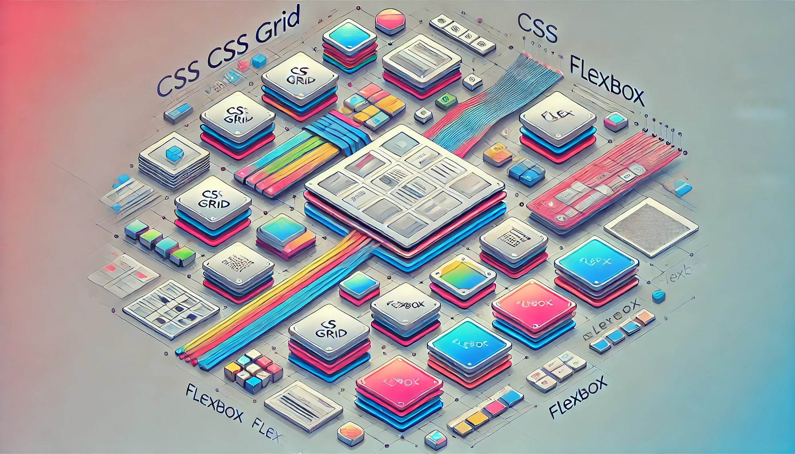

Blog Posts
The Future of Web Development
Web development is constantly evolving with new technologies and
frameworks. In this post, we will explore some of the latest trends
and what the future holds for web developers.
One of the most exciting developments is the rise of WebAssembly,
which allows developers to run high-performance code in the browser.
This opens up new possibilities for web applications, including
gaming, video editing, and more.
Another trend is the increasing popularity of static site generators
like Gatsby and Next.js. These tools allow developers to build fast,
secure, and scalable websites with ease.
Finally, we can't forget about the importance of web accessibility.
As the web becomes more integral to our daily lives, it's crucial
that we build websites that are accessible to everyone, regardless
of their abilities.
Stay tuned for more updates on the latest in web development!
Understanding JavaScript Frameworks
JavaScript frameworks have become an essential part of modern web
development. In this post, we will discuss some of the most popular
frameworks and their use cases.
React, developed by Facebook, is known for its component-based
architecture and is widely used for building user interfaces.
Angular, maintained by Google, is a comprehensive framework that
provides a robust solution for building large-scale applications.
Vue.js is a progressive framework that is easy to integrate with
other projects and libraries, making it a popular choice for
developers.
Each of these frameworks has its strengths and weaknesses, and the
choice of framework often depends on the specific needs of the
project.
CSS Grid vs. Flexbox: Which One to Use?

CSS Grid and Flexbox are two powerful layout systems in CSS. In this
post, we will compare them and discuss when to use each one.
CSS Grid is a two-dimensional layout system that allows you to
create complex layouts with rows and columns. It is ideal for
creating grid-based designs.
Flexbox is a one-dimensional layout system that is perfect for
distributing space along a single axis. It is great for creating
flexible and responsive layouts.
Both CSS Grid and Flexbox have their unique features and can be used
together to create versatile and responsive web designs.
Comments